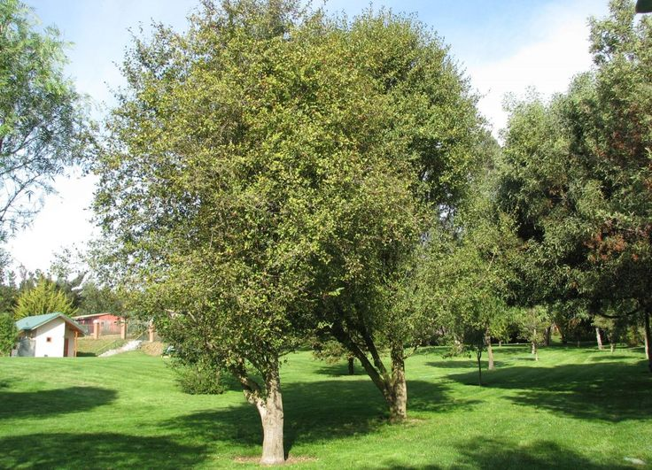

Espinos are an exceptional choice due to their remarkable adaptability to extreme environmental conditions. They can thrive in a wide range of temperatures, from as low as -8°C to as high as 36°C, making them highly resilient to both cold and heat. Additionally, they can survive in regions with minimal rainfall, tolerating droughts and growing in areas where annual precipitation can be as low as 28 mm. This makes them an ideal species for arid and semi-arid regions where other trees would struggle to survive. Their ability to persist under such harsh conditions ensures long-term growth with minimal water resources, making them a sustainable option for reforestation and land restoration efforts.

Quillay, on the other hand, is known for its ability to thrive in poor soil conditions where other species would find it difficult to grow. It can survive in harsh climates, making it an excellent option for degraded landscapes. One of its most valuable characteristics is its ability to regenerate after being cut, ensuring continuous growth and making it a sustainable resource for various uses. Additionally, Quillay has a strong resistance to wildfires, allowing it to recover quickly and continue growing even after fire damage. This resilience makes it particularly useful for reforestation in fire-prone areas and for stabilizing ecosystems that are frequently exposed to environmental stressors.
